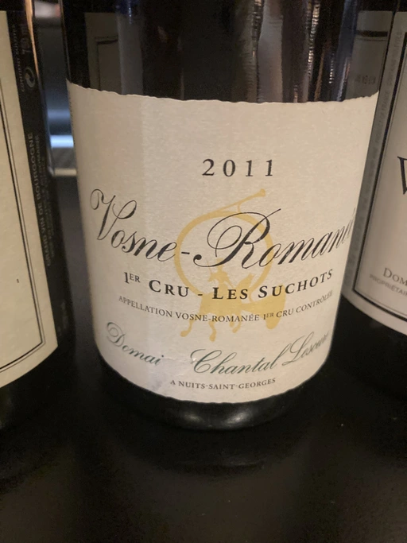

- Type
- Red Still, Dry
- Producer
- Domaine Chantal Lescure
- Vintage
- 2011
- Location
- France, Vosne-Romanée AOC
- Grapes
- Pinot Noir
- Alcohol
- 13
- Sugar
- NA
- Price
- 4700 UAH
- Cellar
- N/A
Ratings
2021-08-26 - 9.00
Beautiful, sexy and expressive bouquet full of flowers and wild strawberries, mushrooms, animal notes, jamon and balsamic notes. Juicy, quaffable and well balanced with long aftertaste. Great compromise between complexity and approachability. Maybe I am drunk already, but IMHO this wine deserves such a high score.
Related